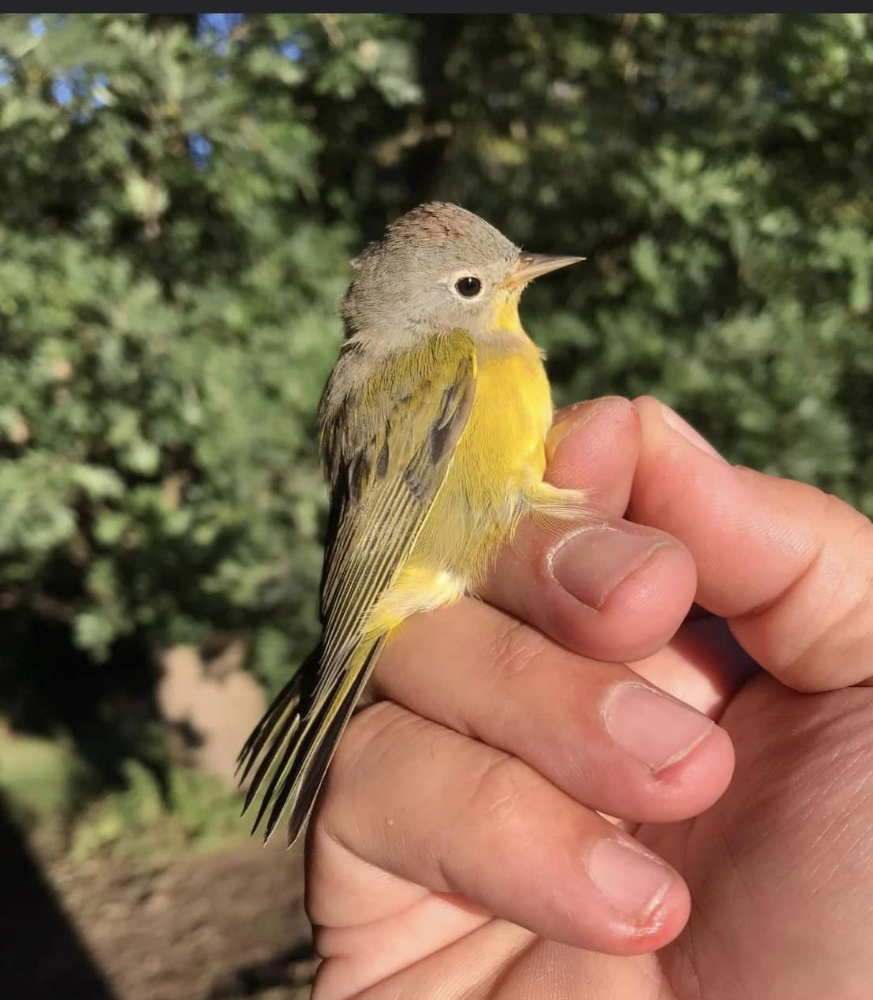

Locations/Hours
Open Hours
Our wildlife hospital opens most days around 10:00 AM. Occasionally we open as early as 4:00 AM (meeting a rescuer, education program or critical patient). Some days we open as late as noon or 1PM (errands, veterinary appointment or picking up supplies). We close about 5:30PM (or after patients and residents are fed and taken care of). Occasionally we close about 3:30 or 4:00 PM (usually during the winter months when there are fewer patients). Sometimes we close as late as midnight or 1:00 AM (meeting a rescuer, critical patient, lots of orphans to feed or catching up on paperwork). We have been known to stay overnight (when it gets too late to even think about going home). Some days or afternoons, we aren't here at all (programs or veterinary appointments). Lately we've been here just about all the time (baby season!!!!) - except when we are someplace else (in the hospital ourselves - undergoing surgery!!).......but we really should be here then, too!!
Our Location
5695 W. Hill Road Decatur, IL
By state and federal law, the IRC cannot give tours of its wildlife hospital nor can we display orphaned or injured wildlife to the public, therefor we are NOT open for private tours. Directors and volunteers are very busy every day taking care of wildlife patients and our permanent residents so until funding and more volunteers are available, the nature center can only be open during scheduled public events. Scheduling events help us plan our time to our advantage for our wildlife patients and for program guests.